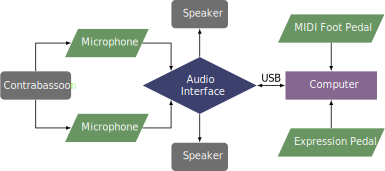

This piece was composed in 2008, revised in 2015, and had some patch updates in 2019. It was composed for Michael Burns and can be obtained by contacting the composer at his website.
This piece is written for contrabassoon and Max/MSP. The patch allows for either one external microphone or two. The patch can be controlled with a MIDI foot pedal that sends a value of 127 to controller 64. Another option is to use an AirTurn device. Another section of the patch allows the performer to slightly change the tempo by using an expression pedal mapped to controller 7.
The setup for this piece is shown below. 
A screenshot of the Max patch is shown in the screenshot section. If two microphones are used, the performer should select the dropdown menu that says Input 1 external mic and change it to Input 1/2 external mics. After selecting the correct inputs, the performer should click on the microphone button to turn on the audio system. The patch is then ready for the performance. In the purple box, different cues can be selected for practice purposes. The current cue is printed in the box in the bottom left corner of the purple box.
Most of this piece is not too demanding from a technical standpoint. The middle section, called the ``playground,'' features choosing from a number of cells to play in an improvisatory fashion. There are about twenty measures after the ``playground'' that are technically challenging, but the tempo can be controlled to some extent by using the expression pedal. It should be an accessible piece for students with contrabassoon experience. From the electronic standpoint things are not very complicated either. The piece does not have a meter for most of the piece, so triggering the electronics is not as time sensitive as other pieces that require strict timing. The score has two lines that represent some of the key elements of the electronics part to help the performer stay in sync with the patch. The patch has a variety of live sound processing, recorded sound processing, and prerecorded material. This piece could be a great first piece with electronics, with the caveat that the student should already have some experience with the contrabassoon.
ContraMax features elements of dissonance as well as the influence of popular dance music (one of the sections refers to the "Disco" beat). The dissonance should be accessible, and it is an entertaining piece that will surely be a unique experience for most audience.
©2024 by Benjamin Bradshaw
Logo ©2024 by Hannah Bradshaw